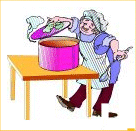
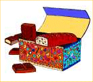

|  |  |
Legend has it that long ago, one of my ancestors was a master candy maker. His specialty was a unique item made of chocolate, fancy nuts, cream filling, and other ingredients that were a highly guarded family secret. He sold his product under the simple name of Trotter's Treats, or simply TT's. Demand was always high for his confection, and rumor is that he made a lot of money - for those times - selling it.
This ancestor also had an eccentric quality about himself and how he promoted his candy to the consumers. You see, he sold it only in little boxes of 4 treats or 7 treats per box. That's right, just 4 or 7. It didn't matter to him. Take it or leave it, he always said.
The people didn't mind either, as long as they were buying for themselves and their immediate families. The trouble arose when someone who was planning a party for example, and wanted to buy an exact number of the candies in order to give each guest exactly one of the TT's. They had to calculate carefully about how many of each size to buy.
For example, for a party of 30 persons, the host or hostess could buy 4 boxes of 4 treats and 2 boxes of 7 treats. The math looks like this:
And 16 + 14 = 30. That's how they did it. Simple, don't you agree?
Over the years the people showed great interest in calculating just how many boxes of each size would be needed to make any given number of TT's. Sometimes they even found more than one way the purchase could be made, but other times, to their great puzzlement and wonder, they found certain numbers could not be exactly produced.
For example, no one doubted that exactly 10 treats could not be purchased. Two boxes of 4, giving 8, were too few, while any other additional box of 4 or 7 would be too many. Likewise, one box of 7 was too few, and an additional box of 4 gave 11.
So the challenge then became: what was the largest number of TT's that could NOT be purchased? Can you find that number?
Later on, this wily old chap decided to change things a little. As the economy of his time was expanding, he decided to increase the number of treats in the small and large boxes to 5 and 8. The townspeople saw this as merely a new challenge. The debate then became: what was the largest number of TT's that could NOT be purchased now?
Eventually, the math teachers in the town began to realize that there was a great opportunity here to involve their students in some good problem solving. So they began asking their students to try different box sizes, like 3 & 5, 4 & 9, 6 & 7, and so on. The students then prepared reports on their investigations. Very interesting results were found. Some students even found a formula!
So how about you? What can you do?
Good luck, and let me know.
| Comments? Send e-mail. | Back to top | Go back to Home Page | Go back to Contents |